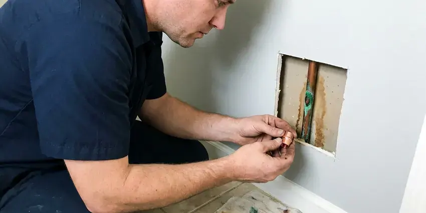

Gas Water Heater Repair in Mentor, OH
Water that never gets hot from a gas tank in Mentor, OH usually means a failing part, not a dead heater. HRL Plumbing tracks down the cause and replaces it.
- Licensed Gas Technicians
- Guaranteed Workmanship
- Fast Gas Heater Repair
- Natural Gas and Propane

Need Gas Water Heater Service in Mentor, OH?
Skip another cold shower. Call HRL Plumbing and a plumber can be there today.
Gas Water Heater Repair in Mentor, OH for Pilots, Burners and Gas Valves
From a pilot that will not hold to a gas valve that overheats the water, HRL Plumbing handles the full list of gas water heater problems in Mentor, OH. We test before we replace anything. That keeps the bill down.
Work we handle every week:
- Burner cleaning and thermocouple replacement
- Gas valve and thermostat replacement
- Diagnosing and repairing pilot outages

Additional Plumbing Repair Services in Mentor, OH
We offer expert plumbing repair services across Mentor, OH to stop leaks, clear blockages, and keep every fixture working the way it should.


Customers
Why Choose HRL Plumbing for Gas Water Heater Repair in Mentor, OH?
Quality parts last longer, so we install factory controls and listed universal valves, not the cheapest kit on the shelf. A repair should hold for years. Bargain thermocouples tend to quit within months. The tank also gets a quick look at the anode and the relief valve, since those tell us how much life it has left.
- Local Knowledge, We work with Mentor plumbing codes and the failures we see most in Ohio homes.
- Stocked Controls, Universal and brand-specific gas valves and pilot kits are stocked on our trucks.
- Clear Pricing, A written price comes before the first wrench turns.
Citywide Coverage
Wherever you are in Mentor, OH, a licensed plumber can get to your gas water heater without a long wait. We are a local outfit, not a call center. Our dispatcher knows the area.
Experienced Team
Our techs train on gas controls and venting, and they repair gas water heaters every week in homes across Mentor. They know the sealed combustion systems Rheem and Bradford White use. You can see it in the work.
Safety-First Approach
From the gas line to the vent cap, we check every part of the system that can leak fuel or exhaust during a repair. Sediment traps and shutoffs get checked too. Anything unsafe gets fixed or flagged.
Trusted Certified Mentor Plumbing Services Professionals
At HRL Plumbing, we take pride in licensed, certified plumbing services throughout Mentor, OH. Those papers on the wall mean something. Every repair, install and maintenance visit follows strict safety and quality rules, and the plumbers doing the work carry recognized industry credentials.
Call Us Now PHCC Plumbing Contractor Recognition
PHCC Plumbing Contractor Recognition Better Business Bureau (BBB) Accreditation
Better Business Bureau (BBB) Accreditation Angi Certified Pro
Angi Certified Pro ISO 9001 Quality Management Certification
ISO 9001 Quality Management CertificationWhat Our Gas Water Heater Repairs Cover in Mentor, OH
Pilot Light and Ignition Service in Mentor
No hot water and a dark pilot window usually point to the ignition side of the heater. We pull the pilot assembly and look at the thermocouple tip, the pilot orifice and the piezo igniter wire. A thermocouple that tests weak on the millivolt meter will not hold the gas valve's magnet open, so the pilot drops out a minute after you relight it by the label. Common pilot kits ride on most of our trucks.

Gas Water Heater Code Checks in Mentor, OH
Fuel gas code covers more of a water heater repair than most people expect. We check for a sediment trap, an approved flex connector and a shutoff valve within reach of the unit. Garage installs in Mentor, OH need the burner raised 18 inches off the floor unless the heater is listed as vapor resistant, and strapping goes on wherever the local code asks for it. Clearances get measured too.
Commercial Gas Water Heater Repair in Mentor, OH
Restaurants and salons in Mentor, OH burn through hot water faster than any house, and a down heater stops the business. Most commercial tanks hold 75 to 100 gallons and run far higher BTU inputs than a home unit. We work on those larger atmospheric and power vent units, including the electronic controls, the burner manifolds and the piping that ties two tanks together on one supply. Every hour down matters. Repairs can often be booked before you open or after you close.
All Major Gas Water Heater Brands Serviced in Mentor
Every brand label we see in garages and closets uses one of a handful of gas control designs. Rheem and Ruud share most parts, and State shares a lot with A.O. Smith. Bradford White runs its own control system, so we stock those separately. Knowing which family a heater belongs to lets the tech bring the right valve, thermocouple or igniter on the first trip instead of ordering parts and coming back two days later. A photo of the rating plate helps us prep.
Tank Leaks and Pressure Issues in Mentor, OH
Water on the floor near the heater does not always mean the tank is gone. Plenty of leaks come from the drain valve, the relief valve or a sweating supply nipple. A relief valve that weeps after every heating cycle usually points to high street pressure or a missing expansion tank, and both are cheaper to fix than a water heater in a Mentor, OH home. If the bottom seam is wet, the tank has failed. No patch fixes that.
Thermostat & Gas Valve Repair in Mentor, OH
Scalding water at the kitchen tap is a valve problem until proven otherwise. Sensors can drift as they age, and dials sometimes get bumped past the hot mark. Our plumbers in Mentor, OH measure the outlet temperature at the nearest fixture, compare it to the dial and replace the gas control if it is overshooting, because water at 140 degrees can burn a child's skin in a few seconds. A setting near 120 degrees works for most households.
Burner Tray and Venting Repair in Mentor
Rust scale on the burner tray is a sign the flue baffle or the tank top is shedding. The burner comes out, the ports get cleared and the flame arrestor gets a look. Then the vent gets checked from the draft hood to the roof, because a flue that is loose, sagging or capped by a bird nest can push carbon monoxide back into your Mentor home. A smoke pencil shows the draft.

Burner Cleaning and Repair in Mentor, OH
Yellow flame tips, soot on the burner door or a roaring sound at startup all mean the burner is not getting clean air. The burner comes out, the ports get brushed and the orifice gets cleared. We also confirm the orifice is drilled for the fuel you have, because a natural gas orifice on a propane heater, or the reverse, will soot up the flue and push carbon monoxide levels well past normal. You want a steady blue flame. Rust flakes on the burner send us to check the flue baffle next.
Gas Water Heater Repair Near Me in Mentor, OH
Close by is only half of it. The tech also needs years of hands-on time with gas controls and vents. Our plumbers handle pilots, valves, burners and flues every week, and they carry a manometer and a combustion analyzer so they can confirm the heater is burning cleanly before they leave. Most calls finish in one visit.
Our techs work Mentor every day, so they know which neighborhoods have older atmospheric tanks and which have newer power vent units. That saves time on the diagnosis. The first thing they check is usually the vent. A heater with a disconnected flue or a blocked chimney gets fixed before anything else, since a bad vent can send carbon monoxide into living space.
HRL Plumbing at a Glance
- Licensed and insured plumbers serving Mentor, OH
- Same-day appointments and 24/7 emergency response
- Clear written estimates, no hidden fees
- 4.9-star rated by 673+ Ohio customers
Mentor Map
Mentor Information
- Population
- 46,929
- Area codes
- 440/216/330
- Service area
- Mentor and communities within 40 miles
- Nearby
- Euclid, Cleveland, Lakewood, Parma
Much of Ohio has hard water, which leaves scale in water heaters, clogs aerators and cuts the life of appliances. Yearly flushing and a quick check keep a gas tank making hot water for more years.
Talk to a Plumber
Reach out to HRL Plumbing for reliable plumbing work done by licensed pros in Mentor, OH.
Our Specialized Plumbing Services in Mentor, OH
At HRL Plumbing, we handle the full list of plumbing services across Mentor, OH. We go from leak detection all the way to full system installations, for homes and commercial buildings, and we do it quickly at a fair price. Take a look at our core services below:


How a Gas Water Heater Repair Goes in Mentor, OH
A gas water heater repair should be fast, safe and priced up front.
Request a Quote
Call (740) 449-7505 to book your gas water heater repair. We ask what the heater is doing and book a visit to your Mentor home.
Thorough Inspection
Your tech checks every part from the gas line to the flue. The cause gets pinned down before any part comes off the truck.
Clear Explanation and Repair
You hear what failed in plain language and get the price up front. After your okay, the repair gets done with quality parts.
Frequently Asked Questions About Gas Water Heater Repair in Mentor
Plan on $150 to $700 for most repairs in Mentor. Pilot and thermocouple work runs at the low end of that. The part is what moves the price. Gas control valves and power vent parts sit at the high end, and if the tank is old enough that the repair price starts to approach half of a replacement, we will put both numbers in front of you. No work starts without a yes from you.
Yes, including Rheem, Ruud, Bradford White, State, American Standard and A.O. Smith. Most residential tanks share a small set of control and pilot designs. That overlap means the truck can carry thermocouples, universal valves and pilot kits that fit most of what we find in Mentor, OH homes, with brand-specific parts a phone call away. Odd models take a day to source.
Same-day repair is the goal on most calls. Common parts are on the truck, so most jobs finish on the first visit. When a heater needs a brand-specific gas valve or a power vent blower, the supply house may need a day to get it, and we will leave the heater safe in the meantime. You will not be left guessing.
Pretty much all of them. Rheem, Ruud, State, Whirlpool and American Standard tanks share many parts. Bradford White uses its own controls, and Rheem and Ruud come from the same company, so between universal kits and brand kits the truck covers most heaters in a single trip. Unusual units sometimes need a trip to the supply house.
For part swaps, almost never. Thermocouples, igniters and gas valves are treated as repairs by most building departments in Ohio. A permit usually applies when the whole heater is replaced, moved to a new spot or tied into new gas piping or a new vent. We sort that out before the work starts.
Most of the time, the same day. Once on site, a typical repair takes an hour or two. A special-order gas valve or power vent blower can take one to three business days to arrive, and in the meantime we leave the heater shut down safely with the gas valve off. You get a call the day the part arrives.
Yes, when the venting fails. Exhaust can spill indoors through a loose flue, a blocked chimney or a draft hood that backdrafts. We check draft on every repair with a smoke test or a combustion analyzer, and we look for heat-scorched paint or melted plastic near the draft hood, which are signs of spillage. Put CO alarms on every floor.
Usually, yes. Lukewarm water from a gas tank points to the thermostat, the burner or sediment. A broken dip tube is another possibility, since a cracked tube lets incoming cold water mix with the hot at the top of the tank instead of being delivered to the bottom near the burner. We check the easy causes first.
What People Are Saying About Our Plumbing Experts?

Monica A.
Our water bill nearly doubled in one month with no change in how we used water. The tech checked the meter, heard the leak under the hallway with his equipment, and opened a hole about a foot square. Fixed the same day.
Slab Leak Repair · Cuyahoga Falls, OHLaura S.
Our 40 gallon tank started leaking from the bottom after thirteen years. The tech hauled the old one out, set a new unit with a fresh expansion tank, and had hot water running in about four hours. He took the old tank with him too.
Water Heater Replacement · Euclid, OH
Robert G.
The camera showed a full break in our clay sewer line near the street. HRL Plumbing replaced it with a trenchless pipe burst, so the only digging was two small pits in the yard. They let us watch the footage before and after.
Sewer Line Replacement · Cleveland, OH
Nathan E.
Our tankless heater kept throwing an error code and shutting off mid shower. The tech flushed the heat exchanger, which was full of scale, and replaced a bad flow sensor. Hot water has been steady for half a year now.
Water Heater Repair · Parma, OH
Brian W.
I smelled gas behind the dryer and called right away. The plumber found a corroded flex connector, replaced it, and pressure tested the whole line before turning the gas back on. He let me watch the gauge hold steady for fifteen minutes.
Gas Line Repair · Parma, OHKevin O.
Before buying our house I paid for a sewer camera inspection. HRL Plumbing found a belly in the line that held standing water about forty feet from the cleanout. We used the video to get the sellers to fix it before closing.
Sewer Camera Inspection · Mentor, OH